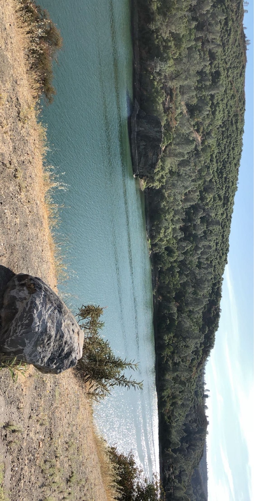

About Me
An Embedded Software Engineer student with a knack for turning ideas into working systems.
My Journey

Hi, I'm Milad! I started my journey in the U.S., studying computer science for 2.5 years before diving deep into software engineering at Chas Academy. My passion for embedded systems began with the thrill of connecting software with hardware. Now, I'm all about mastering C++ and tackling real-world tech challenges!
Experience highlighs
👨💻 Advanced Coursework
Studying C++, embedded systems, and microcontrollers with hands-on projects.
📋 Project Management
Led teams and coordinated deadlines in a fast-paced environment.
🔧 Technical Projects
Built sensor-based systems and embedded controllers with real-world applications.
📚 Lifelong Learner
Constantly exploring advanced C++ and real-time system concepts.
My Skills
C++ Programming
Proficient in memory management, OOP, and efficient coding.
Embedded Systems
Experience with microcontrollers, peripherals, and hardware-software integration.
Problem-Solving
Thrives on tackling complex issues with creative solutions.
Personal Interests
Outside of my studies and projects, I enjoy getting outside and explore nature. Hiking is one of my favorite ways to unwind, and I often bring a book along to get a good read with the scenic views. This helps me recharge and keeps me grounded outside of the tech world.
Apart from that, I'm a dedicated gamer. Gaming allows me to unleash my competitive side, and I'm currently rank 1 in *World of Warcraft*. Whether it's strategizing solo or teaming up with friends, gaming is my go-to for both challenge and fun with good company.
